Our Vision
To raise a generation of true worshippers who worship God in Spirit and in truth, transform lives through worship, and impact nations with the message of Jesus Christ.
Worshipping God in Spirit and in truth, transforming lives through worship, and sharing the message of Jesus Christ with the nations.
The Promise Worship Rwanda is a worship ministry founded in September 2020 in Rwanda. We exist to bring people closer to God through worship, spread the Gospel of Jesus Christ, nurture spiritual growth, and create a family where young people can discover their purpose, develop their gifts, and serve God together.
To raise a generation of true worshippers who worship God in Spirit and in truth, transform lives through worship, and impact nations with the message of Jesus Christ.
To glorify God through worship, evangelism, discipleship, and raising spiritually grounded worshippers and gospel ministers who will positively impact their generation.
Servant leadership, spiritual maturity, unity, accountability, discipleship, care for people, and growth in Christ.
Founder, Visionary and President
Providing spiritual direction, vision, strategic leadership and oversight of the ministry. The Promise Worship Rwanda believes that every leader is called not only to serve through music, but also to care for people, build relationships and help others grow in Christ.
Our ministry brings people together to worship, grow, serve and share the love of Christ.
Join The Promise Worship Rwanda as we celebrate the launch of our first live album. Come and be part of this special moment of worship.
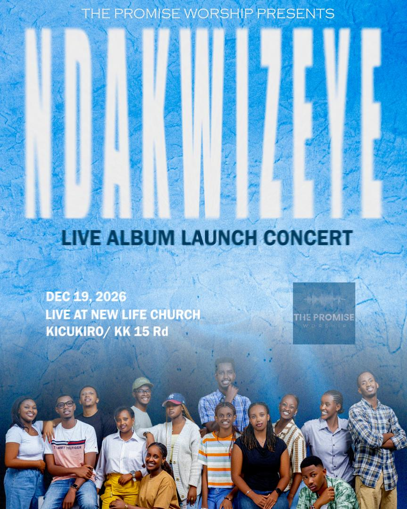
*The event start time is subject to change. Please contact the ministry for the latest updates.
A glimpse of our worship gatherings, ministry team and moments of praise. More photos and event memories will be added as the ministry grows.
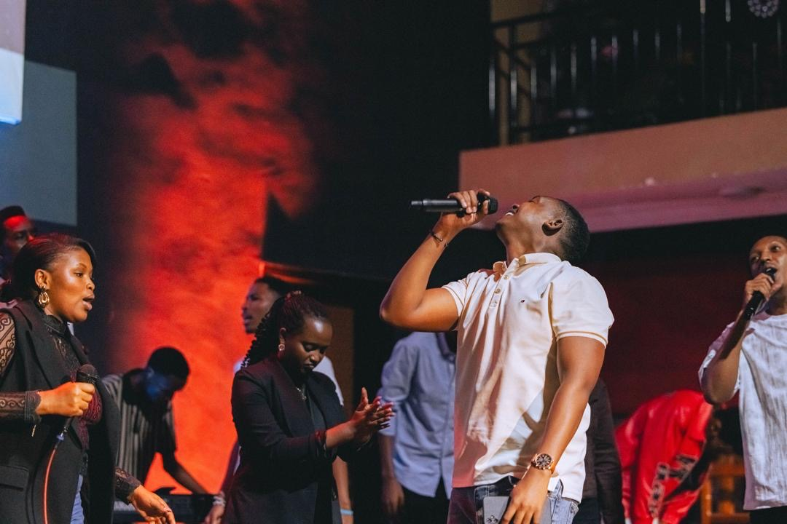
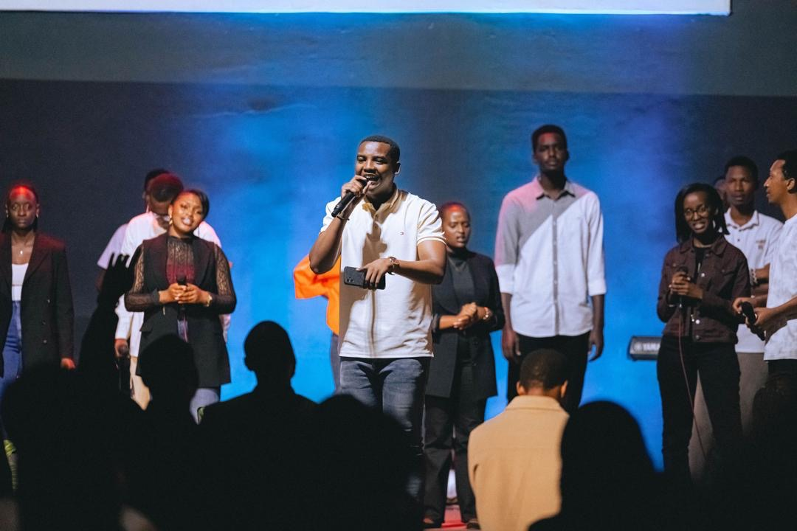
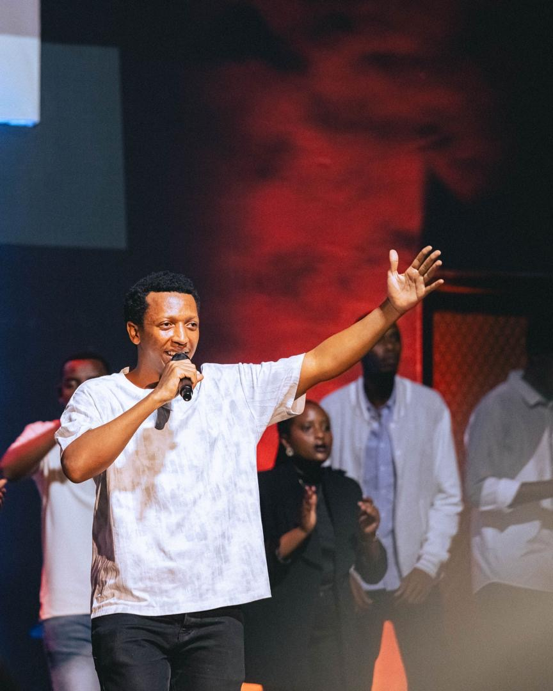
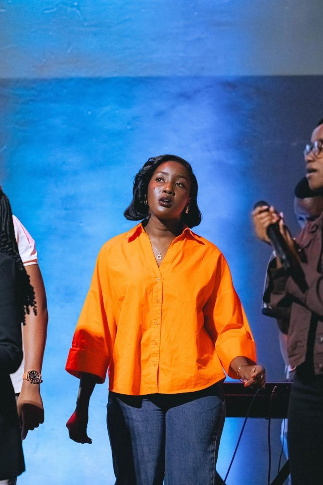
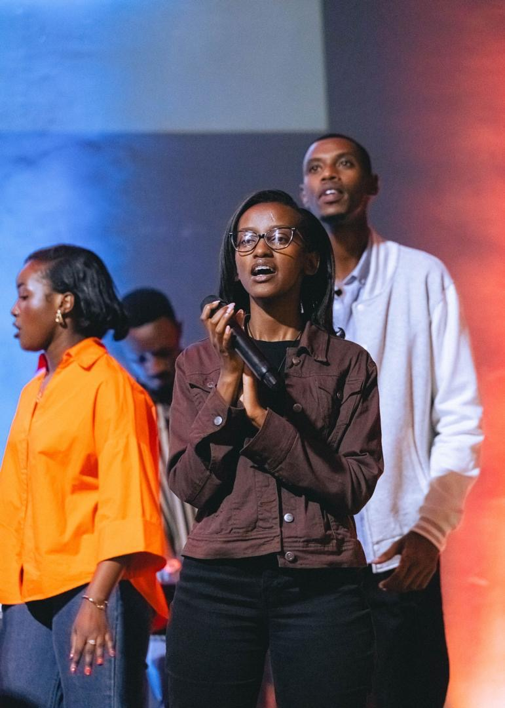
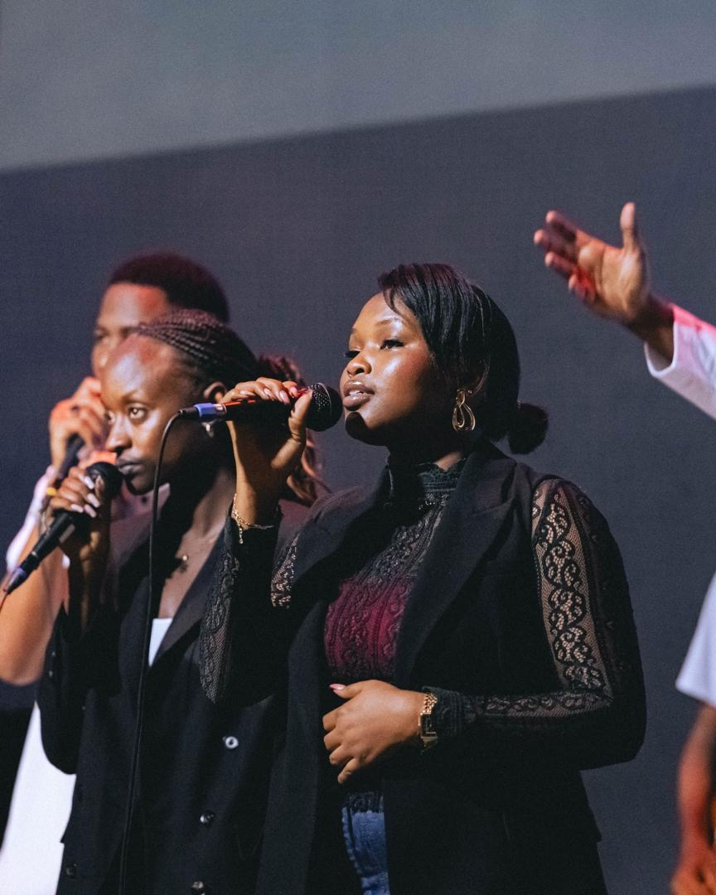
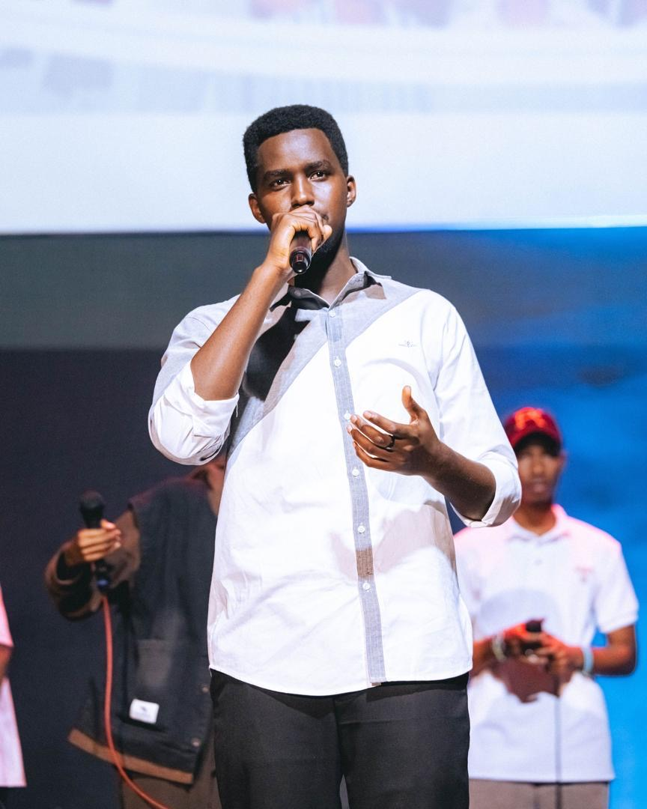
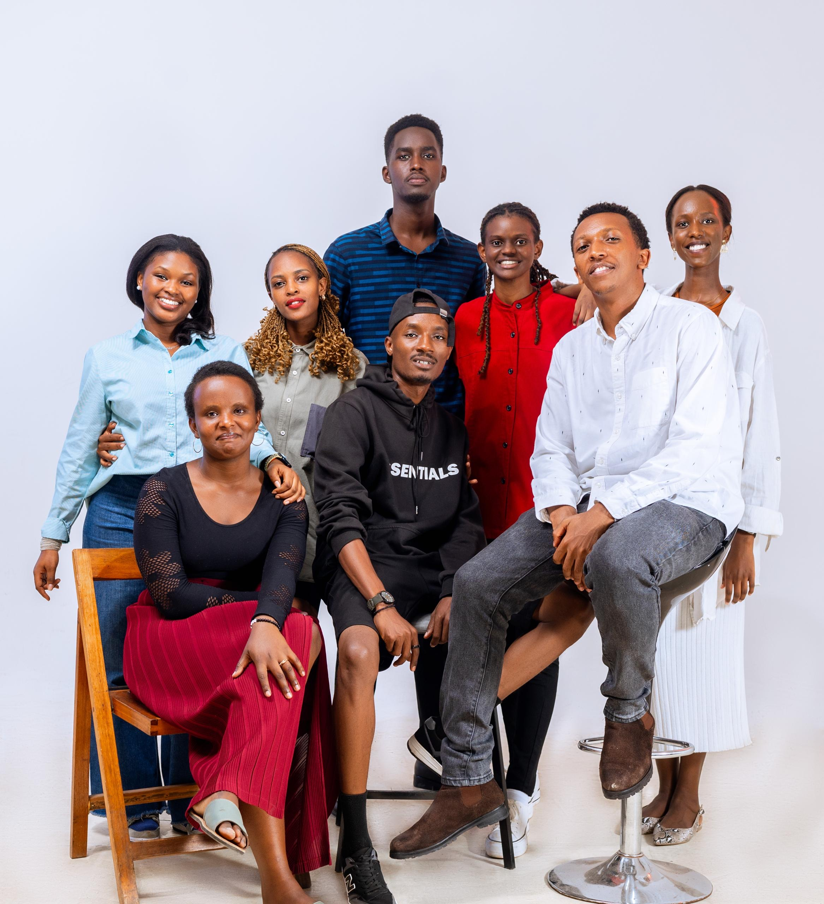
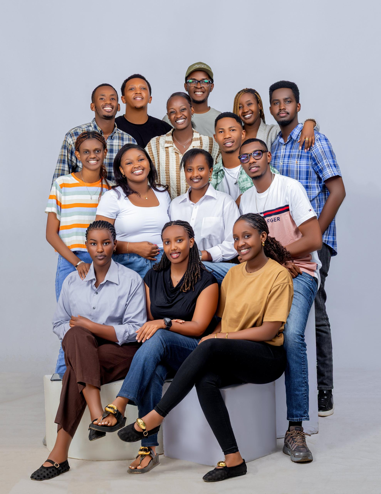
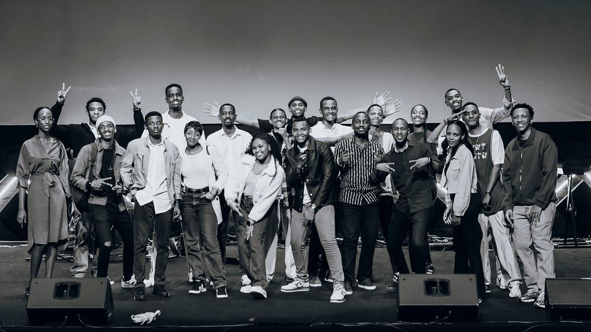
Watch moments from our worship gatherings below, and visit our official YouTube channel for more worship videos, music releases and ministry updates.
A moment of praise and worship with the ministry family.
Join us in a moment of worship through song.
Subscribe to our channel for more worship videos and ministry updates.
If you would like the ministry to pray with you, or if you have a testimony to share, reach out privately. We would be honoured to stand with you in prayer and celebrate what God is doing in your life.
The Promise Worship Rwanda is based in Kicukiro, Kigali, Rwanda. For ministry enquiries, prayer requests or invitations, contact us.
Kicukiro, Kigali, Rwanda · Founded September 2020